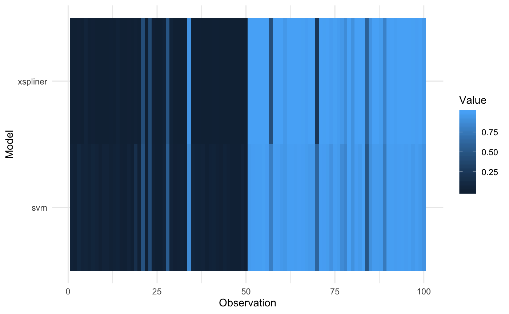

Plot models comparison
The function plots models comparison based on them predictions.
plot_model_comparison(x, model, data, compare_with = list(), prediction_funs = list(function(object, newdata) predict(object, newdata)), sort_by = NULL)
Arguments
| x | Object of class 'xspliner' |
|---|---|
| model | Base model that xspliner is based on. |
| data | Dataset on which predictions should be compared. |
| compare_with | Named list. Other models that should be compared with xspliner and |
| prediction_funs | Prediction functions that should be used in model comparison. |
| sort_by | When comparing models determines according to which model should observations be ordered. |
Examples
#>#>library(xspliner) # Build SVM model, random forest model and surrogate one constructed on top od SVM model_svm <- svm(Species ~ Sepal.Length + Sepal.Width + Petal.Length + Petal.Width, data = iris_data, probability = TRUE) model_rf <- randomForest(Species ~ Sepal.Length + Sepal.Width + Petal.Length + Petal.Width, data = iris_data) model_xs <- xspline(Species ~ xs(Sepal.Length) + xs(Sepal.Width) + xs(Petal.Length) + xs(Petal.Width), model = model_svm) # Prepare prediction functions returning label probability prob_svm <- function(object, newdata) attr(predict(object, newdata = newdata, probability = TRUE), "probabilities")[, 2] prob_rf <- function(object, newdata) predict(object, newdata = newdata, type = "prob")[, 2] prob_xs <- function(object, newdata) predict(object, newdata = newdata, type = "response") # Plotting predictions for original SVM and surrogate model on training data plot_model_comparison( model_xs, model_svm, data = iris_data, prediction_funs = list(xs = prob_xs, svm = prob_svm) )# Plotting predictions for original SVM, surrogate model and random forest on training data plot_model_comparison( model_xs, model_svm, data = iris_data, compare_with = list(rf = model_rf), prediction_funs = list(xs = prob_xs, svm = prob_svm, rf = prob_rf) )# Sorting values according to SVM predictions plot_model_comparison( model_xs, model_svm, data = iris_data, compare_with = list(rf = model_rf), prediction_funs = list(xs = prob_xs, svm = prob_svm, rf = prob_rf), sort_by = "svm" )